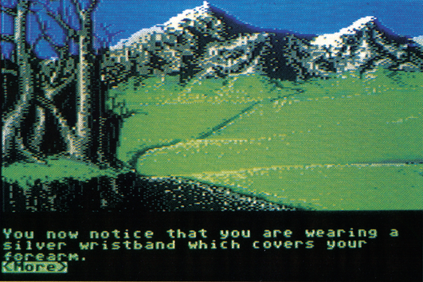
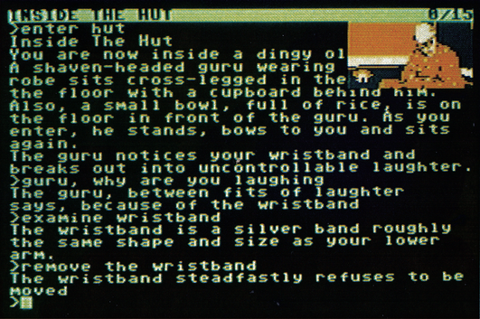

The Pawn
England ist bekannt für seine Kassetten-Adventures, die in Umfang und Spielwitz oft den amerikanischen Disketten-Programmen hinterherhinken. »The Pawn« könnte diese Situation ändern.
Sie wachen eines Morgens völlig verstört unter freiem Himmel auf, wissen nicht wo Sie sind. Sie versuchen verzweifelt, sich an die Ereignisse des gestrigen Tages zu erinnern. Sie gingen gerade vom Supermarkt nach Hause, als Ihnen ein seltsamer Mann entgegenkam. Als dieser nahe an Ihnen vorbeiging, hörten Sie ein seltsames Lachen und spürten einen schweren Schlag im Genick. Ab da ist keine Erinnerung mehr vorhanden.
Als Sie sich genauer betrachten, entdecken Sie, daß Sie neben Ihrer normalen Kleidung ein silbernes, massives Armband tragen, das sich offensichtlich nicht entfernen läßt. Wie Sie später feststellen, ist es genau dieses Armband, das Sie daran hindert, die unbekannte Gegend zu verlassen.
In der Zwischenzeit haben Sie auch einiges über Ihren Aufenthaltsort erfahren: Sie sind im Land Kerovnia gefangen, einer seltsamen Welt, in der Mittelalter und Gegenwart gleichzeitig existieren. Da gibt es Prinzessinnen mit Märchenschloß und Videorecorder, Könige, die vom Volk demokratisch gewählt werden und Zauberer, die sich nicht nur der Magie, sondern auch der Technik bedienen. Um dieses seltsame Panoptikum komplett zu machen, trifft man auf sprechende Tiere, Zwerge und andere, noch ungewöhnlichere Bewohner. Oder haben Sie schon einmal einen Reiter mit einem beinlosen, schwebenden Pferd gesehen?
Die Verwirrungen und Verwicklungen in Kerovnia sind beträchtlich: Da gibt es eine unglückliche Liebe der Prinzessin, politischen Trubel aufgrund der etwas eigenwilligen Gesetzgebung des Königs und einen Zaubererstreit, der sich gewaschen hat. Über all diese Umstände berichtet eine knapp 50seitige Novelle, die dem Programm beiliegt.
Über das eigentliche Spielziel wird der Spieler absichtlich im unklaren gelassen. Daß man zwar irgendwie aus Kerovnia herauskommen muß, ist klar, aber dies läßt sich nur erreichen, wenn man bestimmte Probleme des Landes in Zusammenarbeit mit den Kerovnianern löst.
Grafik-Adventures sind nun sicherlich keine Neuheit auf dem Spielemarkt, aber was die Programmierer von Magnetic Scrolls mit »The Pawn« abgeliefert haben, schlägt diskussionslos alles, was bisher für den C 64 erschienen ist. Da wären zuerst einmal die 30 Grafikbilder zu nennen, die wahre Kunstwerke sind. Die Bilder stammen übrigens von Bob Stevenson, der durch Grafik-Demos wie »Killer Drive« und »King Tut« bekannt wurde. Die Bilder können stufenlos über den Bildschirm gescrollt werden. Wer zwar gerne Bilder hätte, aber gerne auch viel Text sieht, kann auf »Cameos«, auf Mini-Bilder, umschalten, die nicht so detailreich sind.

Neben toller Grafik kommt aber der Text auch nicht zu kurz: The Pawn war ursprünglich ein Textadventure für den Sinclair QL, das erst nachträglich die Grafik erhielt. Das Textadventure war als kleiner Angriff auf das »Monopol« von Infocom gedacht. Magnetic Scrolls hat bewiesen, daß auch andere Programmierer technisch so gute Adventures abliefern können. Der Parser ist recht flott und versteht auch komplizierte Sätze und darf sich wirklich mit dem Infocom-Parser messen. Die Text-Eingabe ist komfortabler als alles, was wir bisher gespielt haben. Ein fast schon überdimensionierter Zeilen-Editor hilft schnell über jeden Tippfehler hinweg.

Zur Freude des Benutzers sind die zwei Disketten von The Pawn nicht kopiergeschützt, es wird sogar ein kleines Kopierprogramm mitgeliefert. Raubkopierer erwartet allerdings im Spiel eine sehr unangenehme Überraschung, die das Spielen ohne den Roman unmöglich macht! Ansonsten ist die Dokumentation ausführlich und witzig zu lesen. Wer bei dem einen oder anderen Rätsel hängenbleibt, der erhält erste Hilfe mit verschlüsselten Lösungstips am Ende des Handbuchs, die der Spieler mit Hilfe des Computers decodieren muß — eine tolle Idee, die den Spielspaß nicht nimmt, sondern nur noch weiter in die Höhe treibt.
Eine Wertung von The Pawn fällt einfach: Die gewitzte Handlung, die Super-Grafik, der sehr gute Parser und die exzellente Benutzerführung machen The Pawn zu einem Adventure-Leckerbissen, den kein Abenteuer-Fan verpassen darf. Magnetic Scrolls drohte für das Frühjahr 1987 mit »The Guild of Thieves« ein weiteres Adventure an, bei dem Parser und Bilder noch mal eine Klasse besser werden sollen. Da darf man eigentlich nur gespannt warten und in der Zwischenzeit versuchen, aus Kerovnia herauszukommen.
(bs)| Titel | The Pawn |
|---|---|
| Spielidee | 11/15 |
| Grafik | 14/15 |
| Sound | |
| Schwierigkeit | 12/15 |
| Motivation | 13/15 |
| Besonderheiten | Exzellente Grafik und Parser |
| Hersteller | Magnetic Scrolls/Rainbird |
| Preis | 69 Mark (Diskette) |
| Bezugsquelle | Ariolasoft, Postfach 1350, 4830 Gütersloh |